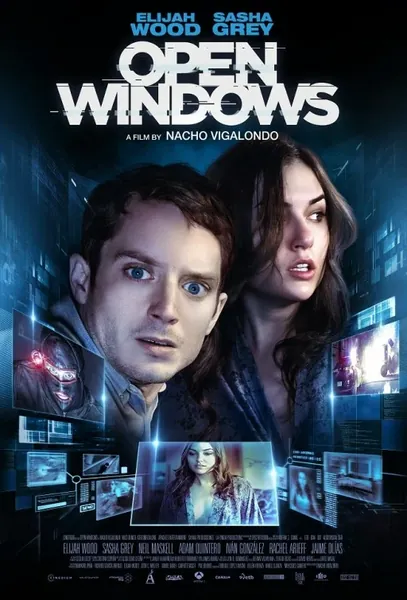

Фильм · 2014 · Криминал, Фантастика
Невилл Чамберс, критик и поклонник актрисы Джилл Годдард, выигрывает свидание с ней, но затем получает звонок от хакера по имени Корд. Тот сообщает, что Джилл похищена, и предоставляет Невиллу доступ к полноценной системе слежения, охватывающей камеры, телефоны, файлы и различные сервисы. Весь фильм зритель наблюдает за происходящим на экране компьютера и вместе с героем оказывается в ловушке, где каждое нажатие клавиши фиксируется системой. Это технотриллер в формате «десктоп-муви», напоминающий о том, что переход по «подозрительной ссылке» — это всегда участие в чужой игре.
Neville Chambers, a critic and fan of actress Jill Goddard, wins a date with her — then gets a call from the hacker Chord, who claims Jill has been kidnapped and gives Neville access to a whole surveillance operating system: cameras, phones, files, services. You watch his screen for the entire film — and, together with the hero, get pulled into a trap where every click is logged. A tech thriller in the desktop format about the fact that a 'suspicious link' is always a role in someone else's play.
← Вернуться в каталог IT Movies